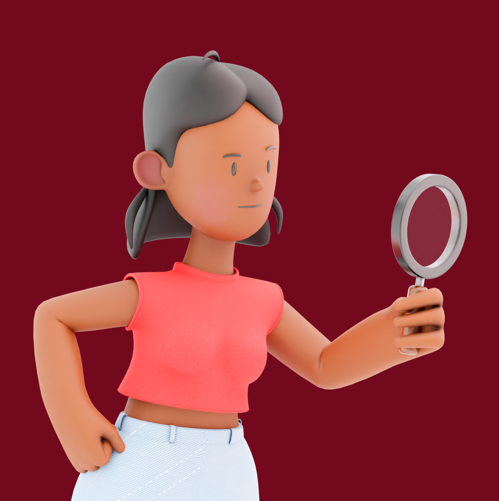

{% extends "layouts.html" %} {% block head %}
<link rel="stylesheet" href="../static/quest.css" />
<link rel="stylesheet" type="text/css" href="https://api.tomtom.com/maps-sdk-for-web/cdn/6.x/6.13.0/maps/maps.css" />
<link rel='stylesheet' type='text/css' href='../assets/ui-library/icons-css/routing.css'/>
<script src="https://api.tomtom.com/maps-sdk-for-web/cdn/6.x/6.13.0/maps/maps-web.min.js"></script>
<script src="https://api.tomtom.com/maps-sdk-for-web/cdn/6.x/6.13.0/services/services-web.min.js?key=SrYTjXxFQhkMGLka0GGNroZKElEdR9V6"></script>
{% endblock %} {% block body %}
<div class="outer-container">
  <header>
    <div class="item">
      
      <p>{{player.team_name}}</p>
    </div>
    <nav>
      <a href="/{{player.team_name}}/dashboard">dashboard</a>
      <a href="/signout">logout</a>
      <a href="/{{player.team_name}}/solve_murder">Solve</a>
    </nav>
  </header>
  <section class="container">
    <h1>Press marker to begin the quest!</h1>
    
    <div class="container-top">
      <div class="quest-photo">
        <div id="map" style="padding: auto; margin: auto; width: 90vw; height: 50vh;"></div>
      </div>
      <div class="container-bottom">
        <div class="quest-details">
          <div id="quest-info" style="display:none;">
              <h1>{{ quest.title }}</h1>
              <p>{{ quest.description }}</p>
              <div>
                  <label for="answer-input">Your answer:</label>
                  <input type="text" id="answer-input">
                  <button id="submit-answer-btn" onclick="checkAnswer()">Submit</button>
              </div>
              <div id="answer-feedback"></div>
          </div>
  
      </div>
      </div>
      <!-- <div class="submit">
        <button id="start-quest-btn" onclick="showQuest()" class="button">
          Start quest
        </button>
      </div> -->
    </div>

    <!-- <form method="post" action="{{ url_for('directions') }}">
        <input type="text" name="origin" placeholder="Origin">
        <input type="text" name="destination" placeholder="Destination">
        <input type="submit" value="Get Directions">
    </form>

    {% for step in directions %}
        <p>{{ step['html_instructions'] }}</p>
    {% endfor %} -->
  </section>
</div>
<script>
  function showQuest() {
        document.getElementById("start-quest-btn").style.display = "none";
        document.getElementById("quest-info").style.display = "block";
    }

    function checkAnswer() {
        var answerInput = document.getElementById("answer-input");
        var userAnswer = answerInput.value.toLowerCase();
        var expectedAnswer = "{{ quest.answer }}".toLowerCase();
        var answerFeedback = document.getElementById("answer-feedback");

        if (userAnswer === expectedAnswer) {
            answerFeedback.innerHTML = "<p>Congratulations, you got the correct answer!</p>";
            answerFeedback.innerHTML += "<p>Here's a hint about the murderer: {{ quest.hint }}</p>";
        } else {
            answerFeedback.innerHTML = "<p>Sorry, that's not the correct answer. Please try again.</p>";
        }
    }
</script>
<script>
  var v2 = new tt.LngLat(6.8943, 52.2215);

  const map = tt.map({
  key: 'SrYTjXxFQhkMGLka0GGNroZKElEdR9V6',
  container: 'map'
  });

  map.setZoom(14);
  map.setCenter(v2);

  // adding trackUser function
  map.addControl(new tt.GeolocateControl({
      positionOptions: {
          enableHighAccuracy: true
          },
      trackUserLocation: true
  }));

  // getting location coords in userLocation
  navigator.geolocation.getCurrentPosition(function(position) {
  var userLocation = [position.coords.longitude, position.coords.latitude];
  });

  // brandmonument big church
  var marker = new tt.Marker()
  .setLngLat([6.895406, 52.220831])
  .addTo(map);

  // brandmonument Pop-up
  let popup1 = new tt.Popup({
  offset: 30 // adjust the popup's position relative to the marker
  }).setHTML("<b>The Brandmonument</b><br>A monument created in memory of a devastating fire that destroyed the town many years ago. The flames may have been extinguished, but some say the spirits of the victims still linger on. Will you dare to pay your respects to the fallen? <br><button id='start-quest-btn' onclick='showQuest()' <class='button'> Start quest </button>");

  marker.setPopup(popup1)

  // firework explosion near Aki
  var marker = new tt.Marker()
  .setLngLat([6.892951, 52.230288])
  .addTo(map);

  // firework Pop-up
  let popup2 = new tt.Popup({
  offset: 30 // adjust the popup's position relative to the marker
  }).setHTML("<b>The Firework explosion area </b><br>A place where fireworks once lit up the sky, but now only darkness and danger remain. The blast left a scar on the landscape, and the area still smolders with an ominous energy. What happened on that fateful night, and could it happen again? <br><button id='start-quest-btn' onclick='showQuest()' <class='button'> Start quest </button>");

  marker.setPopup(popup2).on("mouseover", function() {
  marker.togglePopup();
  }).on("mouseout", function() {
  marker.togglePopup();
  });

  // gedenknaald 
  var marker = new tt.Marker()
  .setLngLat([6.884429, 52.228871])
  .addTo(map);

  // gedenknaald Pop-up
  let popup3 = new tt.Popup({
  offset: 30 // adjust the popup's position relative to the marker
  }).setHTML("<b>The Gedenknaald</b><br>A strange and somber monument that stands tall in the heart of town. The needles, sharp and unforgiving, seem to pierce the very sky, a testament to the tragedy that struck the town so long ago. Some say that the needles hold the key to unlocking the secrets of the past, while others fear the monument is cursed. Will you dare to approach the needles and discover what they hold? <br><button id='start-quest-btn' onclick='showQuest()' <class='button'> Start quest </button>");

  marker.setPopup(popup3).on("mouseover", function() {
  marker.togglePopup();
  }).on("mouseout", function() {
  marker.togglePopup();
  });

  // oorlongsmonument
  var marker = new tt.Marker()
  .setLngLat([6.880981, 52.219542])
  .addTo(map);

  // Oorlongs Pop-up
  let popup4 = new tt.Popup({
  offset: 30 // adjust the popup's position relative to the marker
  }).setHTML("<b>The 'Oorlongs' park </b><br>A park with a curious name and a strange energy. The trees rustle with a strange, eerie wind, and the shadows seem to move on their own. Some say the park is cursed, while others believe it holds a hidden treasure. <br><button id='start-quest-btn' onclick='showQuest()' <class='button'> Start quest </button>");

  marker.setPopup(popup4).on("mouseover", function() {
  marker.togglePopup();
  }).on("mouseout", function() {
  marker.togglePopup();
  });

  // old textile factory 
  var marker = new tt.Marker()
  .setLngLat([6.887212804846581, 52.21371926462283])
  .addTo(map);

  // textile factory Pop-up
  let popup5 = new tt.Popup({
  offset: 30 // adjust the popup's position relative to the marker
  }).setHTML("<b>The Old textile factory </b><br>A decrepit old building that's been abandoned for years. Its walls whisper secrets of the past, and the creaking floors seem to echo with ghostly footsteps. Who knows what secrets the factory holds?!<br><button id='start-quest-btn' onclick='showQuest()' <class='button'> Start quest </button>");

  marker.setPopup(popup5).on("mouseover", function() {
  marker.togglePopup();
  }).on("mouseout", function() {
  marker.togglePopup();
  });

  // route creation
  var route = tt.services.calculateRoute({
  key: 'SrYTjXxFQhkMGLka0GGNroZKElEdR9V6',
  locations: [
      [0,0],
      [-122.4186, 37.7757],
      [-122.4194, 37.7763]
  ]
  });

  // route displaying
  route.then(function(response) {
  var route = response.routes[0];
  var routeLine = new tt.RouteLine({
      width: 5,
      color: '#0070c0'
  }).addTo(map);
  routeLine.draw(route.geometry);
  });

</script>
{% endblock %}
